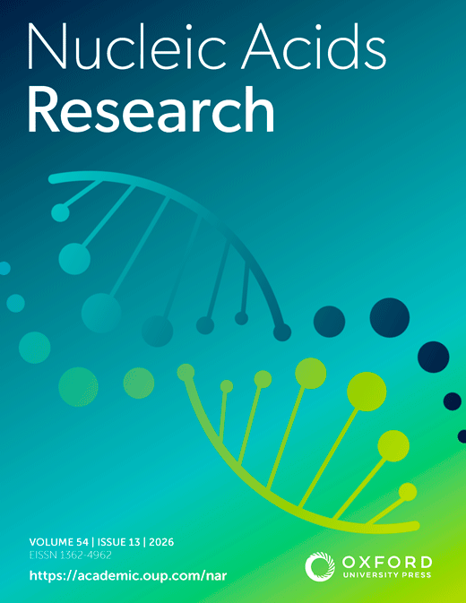
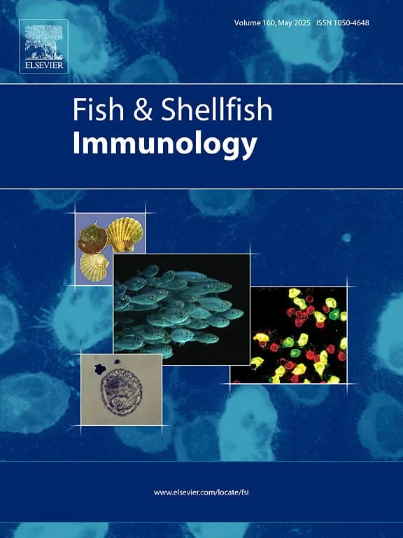
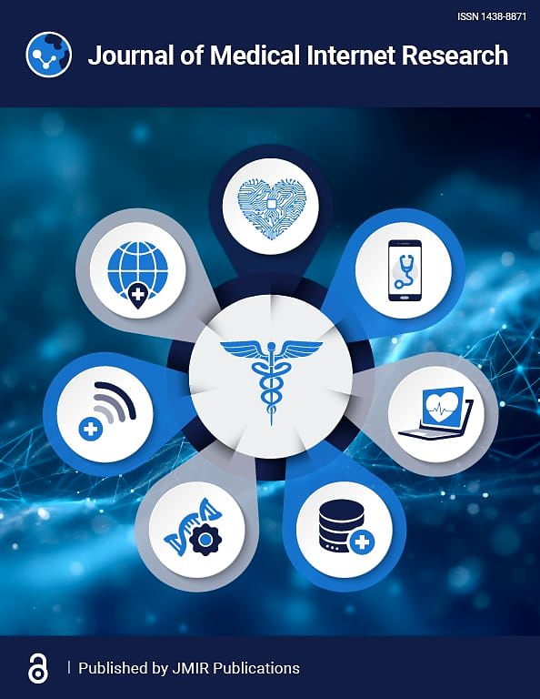
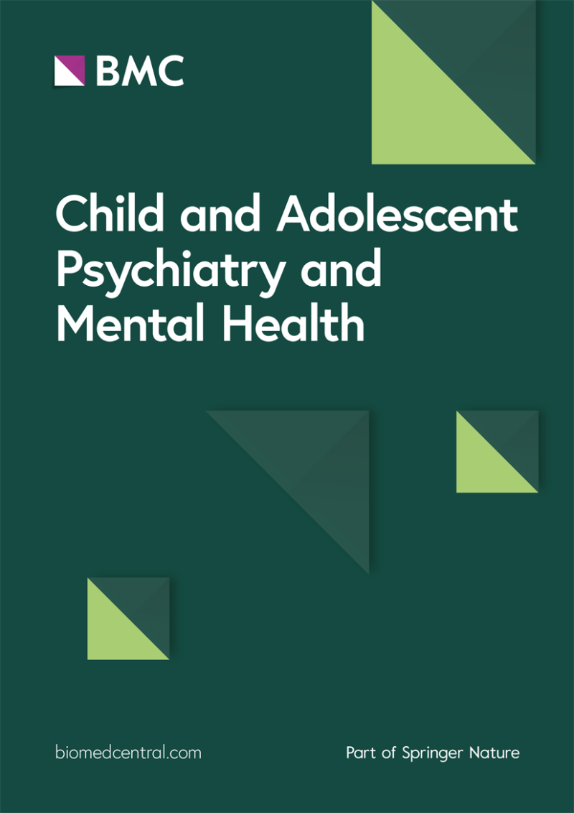

About me
I am Li Pan, a Ph.D. student in the Department of Computer Science at Hong Kong Baptist University, supervised by Prof. ZHANG, Eric Lu. I received my bachelor's degree in Mathematics and Applied Mathematics (with a minor in Psychology) from Beijing Normal University. My research areas are bioinformatics, AI for science, and public health.
Publications

JOURNAL COVERDeepAden: an explainable machine learning method for predicting the substrate specificity of nonribosomal peptide synthetases
Nucleic Acids Research, 54(13), gkag656.
Read paper
JOURNAL COVER
JOURNAL COVERThe Applications of Large Language Models in Mental Health: Scoping Review
Journal Of Medical Internet Research 27, e69284.
Read paper
JOURNAL COVERLongitudinal associations between family conflict, intergenerational transmission, and adolescents’ depressive symptoms: evidence from China Family Panel studies (2016–2020)
Child and Adolescent Psychiatry and Mental Health 19, 10.
Read paper
Education
Ph.D. in Computer Science (Sept. 2026 - Present)
Department of Computer Science, Hong Kong Baptist University
Supervisor: Prof. ZHANG, Eric LuBachelor of Science in Mathematics and Applied Mathematics (2022 - 2026)
Beijing Normal University, China
Honors & awards
- National Scholarship for Undergraduates, Ministry of Education of China (2025)
- Merit Student, Beijing Normal University (2023)
- Outstanding Graduate, Beijing Normal University (2026)